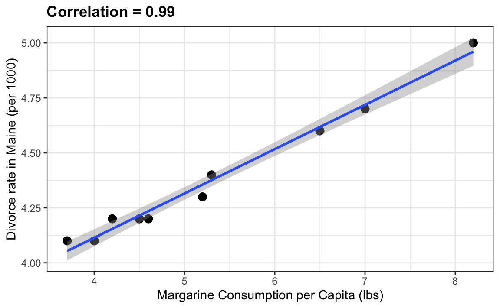
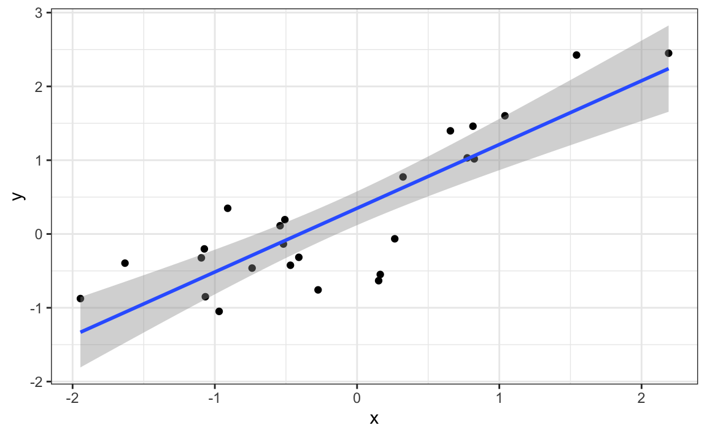
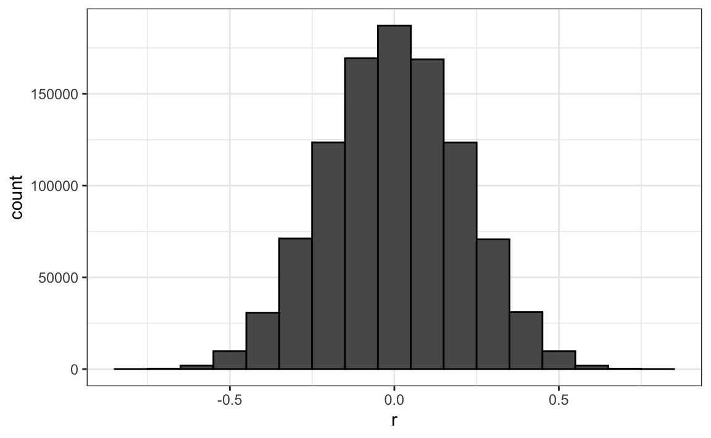
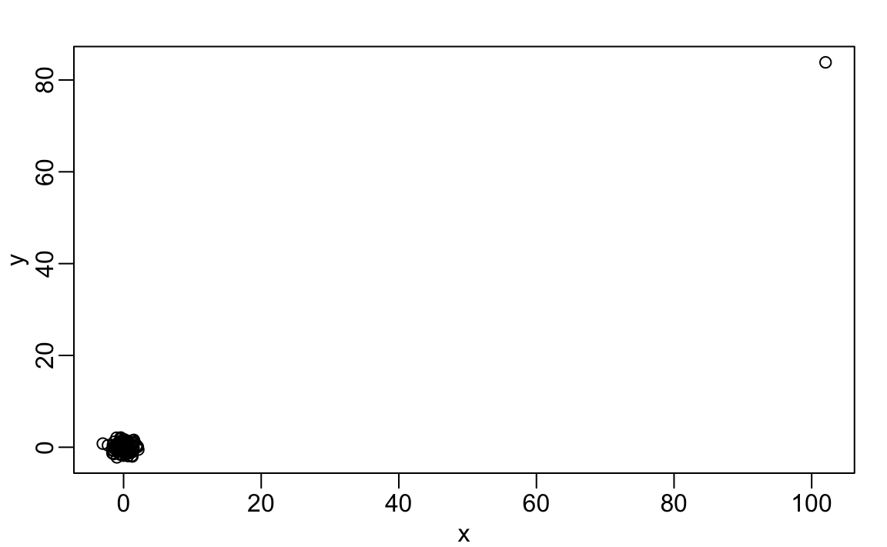
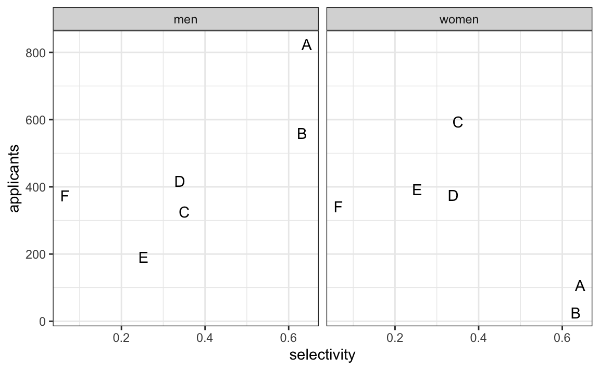
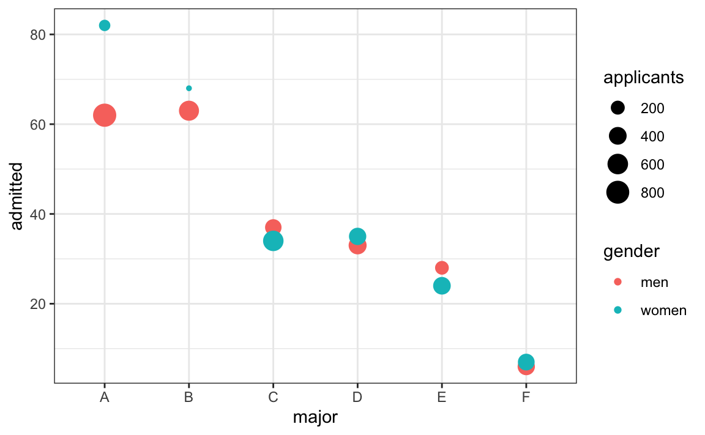
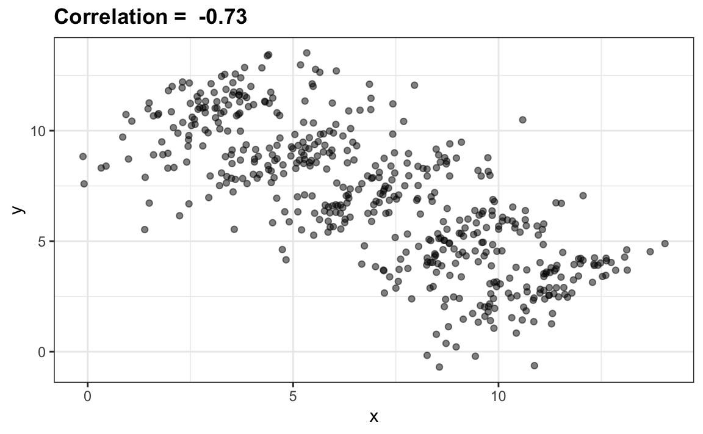
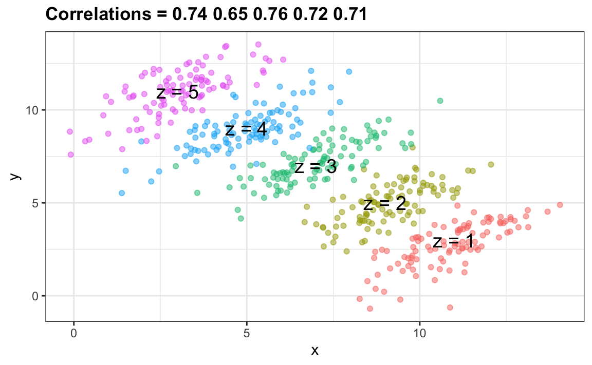

18 Association Is Not Causation
Association is not causation is perhaps the most important life lesson one can learn in a statistics class. Correlation is not causation is another way to say this. We have described tools useful for quantifying associations between variables. However, we must be careful not to over-interpret these associations.
There are many reasons why two observed variables might be correlated without a direct causal relationship. Below, we outline four common situations that can lead to misinterpreting an observed association.
18.1 Spurious correlation
The following comical example underscores the concept that correlation is not causation. It shows a very strong correlation between divorce rates and margarine consumption.
Does this mean that margarine consumption causes divorces? Or do divorces cause people to eat more margarine? Of course not. This is just an example of what we call a spurious correlation.
You can see many more absurd examples on the Spurious Correlations website1.
The cases presented on the website are all instances of what is generally called data dredging, data fishing, or data snooping. It’s basically a form of what in the US they call cherry picking. An example of data dredging would be if you look through many results produced by a random process and pick the one that shows a relationship that supports a theory you want to defend.
A Monte Carlo simulation can be used to show how data dredging can result in finding high correlations among uncorrelated variables. We will save the results of our simulation into a tibble:
library(data.table)
#>
#> Attaching package: 'data.table'
#> The following objects are masked from 'package:lubridate':
#>
#> hour, isoweek, mday, minute, month, quarter, second, wday,
#> week, yday, year
#> The following objects are masked from 'package:dplyr':
#>
#> between, first, last
#> The following object is masked from 'package:purrr':
#>
#> transpose
library(ggplot2)
N <- 25
g <- 1000000
sim_data <- data.table(group = rep(1:g, each = N), x = rnorm(N*g), y = rnorm(N*g))Note we created groups and for each we generated a pair of independent vectors, \(X\) and \(Y\), with 25 observations each. Because we constructed the simulation, we know that \(X\) and \(Y\) are not correlated.
Next, we compute the correlation between X and Y for each group and look for the max:
We see a maximum correlation of 0.785147. If you just plot the data from the group achieving this correlation, it shows a convincing plot that \(X\) and \(Y\) are in fact correlated:
sim_data[group == res[which.max(r), group]] |>
ggplot(aes(x, y)) +
geom_point() +
geom_smooth(formula = 'y ~ x', method = "lm")
Remember that the correlation summary is a random variable. Here is the distribution generated by the Monte Carlo simulation:
res |> ggplot(aes(x = r)) + geom_histogram(binwidth = 0.1, color = "black")
It’s simply a mathematical fact that if we observe random correlations that are expected to be 0, but have a standard error of 0.2041781, the largest one will be close to 1.
If we performed regression on this group and interpreted the p-value, we would incorrectly claim this was a statistically significant relation:
This practice, known as p-hacking, is widely discussed because it may undermine the reliability of scientific findings. Since journals often favor statistically significant results over null findings, researchers have an incentive to highlight significance. In fields such as epidemiology and the social sciences, for instance, an analyst might explore associations between an outcome and many exposures, but only report the one with a small p-value. Similarly, they might try several model specifications to adjust for confounding and select the one that gives the strongest result. In experimental settings, a study could be repeated multiple times, with only the “successful” run reported. Such practices are not always intentional misconduct; they often stem from limited statistical understanding or wishful thinking. More advanced statistics courses cover methods for adjusting analyses to account for these multiple comparisons.
18.2 Outliers
Suppose we measure two independent outcomes, \(X\) and \(Y\), and standardize each set of measurements. Now imagine we make a mistake and forget to standardize just one value, say, entry 23. We can illustrate this situation by simulating such data as follows:
The data look like this:
plot(x, y)
Not surprisingly, the correlation is very high:
cor(x,y)
#> [1] 0.988But this is driven by the one outlier. If we remove this outlier, the correlation is greatly reduced to almost 0, which is what it should be:
cor(x[-23], y[-23])
#> [1] -0.0442There is an alternative to the sample correlation for estimating the population correlation that is robust to outliers. It is called Spearman correlation. The idea is simple: compute the correlation on the ranks of the values. Here is a plot of the ranks plotted against each other:
The outlier is no longer associated with a very large value, and the correlation decreases significantly:
Spearman correlation can also be calculated like this:
cor(x, y, method = "spearman")
#> [1] 0.00251In the Recommended reading section, we include references on estimation techniques that are robust to outliers and applicable to a wide range of situations.
18.3 Reversing cause and effect
Another way association is confused with causation is when the cause and effect are reversed. An example of this is claiming that tutoring makes students perform worse because they test lower than peers that are not tutored. In this case, the tutoring is not causing the low test scores, but the other way around.
A form of this claim actually made it into an op-ed in the New York Times titled Parental Involvement Is Overrated2. Consider this quote from the article:
When we examined whether regular help with homework had a positive impact on children’s academic performance, we were quite startled by what we found. Regardless of a family’s social class, racial or ethnic background, or a child’s grade level, consistent homework help almost never improved test scores or grades… Even more surprising to us was that when parents regularly helped with homework, kids usually performed worse.
A very likely possibility is that the children needing regular parental help, receive this help because they don’t perform well in school.
We can illustrate cause-effect reversal by fitting the regression
\[ X = \beta_0 + \beta_1 y + \varepsilon \]
to the father–son height data, where \(X\) and \(y\) represents father and son heights, respectively. Interpreting \(\beta_1\) causally here would be backwards, as it would imply that sons’ heights determine fathers’ heights. Using the previously defined galton_heights dataset, we do in fact obtain a statistically significant slope, demonstrating that statistical significance does not imply causation or the correct direction of effect.
The model fits the data very well. However, if we look only at its mathematical formulation, it could easily be misinterpreted as implying that a son’s height causes his father’s height. From our knowledge of genetics and biology, we know the direction of influence is the opposite. The statistical model itself is not at fault, and the estimates and p-values are calculated correctly. What is misleading here is the interpretation, not the model or computation.
18.4 Confounders
Confounders are perhaps the most common reason that leads to associations begin misinterpreted.
If \(X\) and \(Y\) are correlated, we call \(Z\) a confounder if it, or some factor associated with it, is a cause of both \(X\) and \(Y\), thereby creating a spurious association between them unless we properly account for \(Z\).
Incorrect interpretation due to confounders is ubiquitous in the lay press and they are often hard to detect. Here, we present a widely used example related to college admissions.
18.4.1 Example: UC Berkeley admissions
Admission data from six U.C. Berkeley majors, from 1973, showed that more men were being admitted than women: 44% men were admitted compared to 30% women. PJ Bickel, EA Hammel, and JW O’Connell. Science (1975). We can load the data and compute a statistical test, which clearly rejects the hypothesis that gender and admission are independent:
two_by_two <- admissions |> group_by(gender) |>
summarize(total_admitted = round(sum(admitted / 100 * applicants)),
not_admitted = sum(applicants) - sum(total_admitted)) |>
select(-gender)
chisq.test(two_by_two)$p.value
#> [1] 1.06e-21But closer inspection shows a paradoxical result. Here are the percent admissions by major:
admissions |> select(major, gender, admitted) |>
pivot_wider(names_from = "gender", values_from = "admitted") |>
mutate(women_minus_men = women - men)
#> # A tibble: 6 × 4
#> major men women women_minus_men
#> <chr> <dbl> <dbl> <dbl>
#> 1 A 62 82 20
#> 2 B 63 68 5
#> 3 C 37 34 -3
#> 4 D 33 35 2
#> 5 E 28 24 -4
#> # ℹ 1 more rowFour out of the six majors favor women. More importantly, all the differences are much smaller than the 14.2 difference that we see when examining the totals.
The paradox is that analyzing the totals suggests a dependence between admission and gender, but when the data is grouped by major, this dependence seems to disappear. What’s going on? This actually can happen if an uncounted confounder is driving most of the variability.
Discovering confounders, and understanding how they can lead to misleading conclusions, often requires exploratory data analysis and critical thinking. Looking at the table above, we notice substantial variability in admission rates across majors. Could this be influencing the overall results? To investigate, we add a selectivity column, the overall admission rate within each major, to the admissions table.
Next, we examine how the number of applicants relates to major selectivity. If selectivity is a confounder, patterns may differ by gender across majors with varying selectivity.
left_join(admissions, selectivity, by = "major") |>
ggplot(aes(selectivity, applicants, label = major)) +
geom_text() +
facet_wrap(~gender) 
We can see the key issue right away: women are submitting far fewer applications to the less selective majors (A and B). So department selectivity is a confounder that influenced both gender (different application patterns) and admission outcome.
18.4.2 Stratifying
The first hint that something was off in the interpretation of the overall admission rates came from stratifying by major. Stratifying by a known or potential confounder is a powerful technique for examining the relationship between two other variables. In exploratory data analysis, stratification can help us detect how a confounder might be distorting the analysis and can offer ideas for how to adjust for it.
Here is an example in which we plot admissions stratified by major and show that women tend to apply to the more selective majors:
admissions |> ggplot(aes(major, admitted, col = gender, size = applicants)) +
geom_point()
We see that, major by major, there is not much difference in admission rates between genders. However, the large number of men applying to Major B, which admits over 60% of applicants, causes the confusion in the overall comparison. This plot suggests that a more sophisticated analysis adjusting for major is needed. We will learn how to perform such an analysis in the next chapter, in Chapter 19.
18.5 Simpson’s paradox
The case we have just covered is an example of Simpson’s paradox. It is called a paradox because we see the sign of the correlation flip when comparing the entire publication to specific strata. As an illustrative example, suppose you have three random variables \(X\), \(Y\), and \(Z\), and we observe realizations of these. Here is a plot of simulated observations for \(X\) and \(Y\) along with the sample correlation:

You can see that \(X\) and \(Y\) are negatively correlated. However, once we stratify by \(Z\) (shown in different colors below), another pattern emerges:

It is really \(Z\) that is negatively correlated with \(X\). If we stratify by \(Z\), the \(X\) and \(Y\) are actually positively correlated, as seen in the plot above.
18.6 Recommended reading
The following resources are recommended for students who want to explore more about spurious correlation, robust estimation, and confounding:
Tyler Vigen. Spurious Correlations.
A lighthearted but instructive look at how unrelated variables can appear strongly correlated. Helps develop critical thinking about association versus causation.
WebsiteHuber, P. J., & Ronchetti, E. M. (2009). Robust Statistics (2nd ed.).
A comprehensive text on methods that remain reliable when data deviate from model assumptions. Covers theory and practical techniques for robust estimation.Greenland, S., Pearl, J., & Robins, J. M. (1999). Causal Diagrams for Epidemiologic Research. Epidemiology, 10(1), 37–48.
A foundational paper explaining confounding and causal thinking using directed acyclic graphs (DAGs).Rothman, K. J., Greenland, S., & Lash, T. L. (2021). Modern Epidemiology (4th ed.).
A thorough reference on confounding, bias, and study design, often used in epidemiology and public health.
18.7 Exercises
For the next set of exercises, we examine the data from a 2014 PNAS paper3 that analyzed success rates from funding agencies in the Netherlands and concluded:
Our results reveal gender bias favoring male applicants over female applicants in the prioritization of their “quality of researcher” (but not “quality of proposal”) evaluations and success rates, as well as in the language used in instructional and evaluation materials.
A response4 was published a few months later titled No evidence that gender contributes to personal research funding success in The Netherlands: A reaction to Van der Lee and Ellemers which concluded:
However, the overall gender effect borders on statistical significance, despite the large sample. Moreover, their conclusion could be a prime example of Simpson’s paradox; if a higher percentage of women apply for grants in more competitive scientific disciplines (i.e., with low application success rates for both men and women), then an analysis across all disciplines could incorrectly show “evidence” of gender inequality.
Who is correct here, the original paper or the response? Below, you will examine the data and come to your own conclusion.
1. The primary evidence for the conclusion of the original paper relies on a comparison of the percentages. Table S1 in the paper includes the information we need:
library(dslabs)
research_funding_ratesConstruct the two-by-two table used for the conclusion about differences in awards by gender.
2. Compute the difference in percentage from the two-by-two table.
3. In the previous exercise, we noticed that the success rate is lower for women. But is it significant? Compute a p-value using a Chi-square test.
4. We see that the p-value is about 0.05. So there appears to be some evidence of an association. But can we infer causation here? Is gender bias causing this observed difference? The response to the original paper claims that what we see here is similar to the UC Berkeley admissions example. Specifically, they state that this “could be a prime example of Simpson’s paradox; if a higher percentage of women apply for grants in more competitive scientific disciplines, then an analysis across all disciplines could incorrectly show ‘evidence’ of gender inequality.” To settle this dispute, create a dataset with number of applications, awards, and success rate for each gender. Re-order the disciplines by their overall success rate. Hint: use the reorder function to re-order the disciplines in a first step, then use pivot_longer, separate, and pivot_wider to create the desired table.
5. To check if this is a case of Simpson’s paradox, plot the success rates versus disciplines, which have been ordered by overall success, with colors to denote the genders and size to denote the number of applications.
6. We definitely do not see the same level of confounding as in the UC Berkeley example. It is hard to say that there is a clear confounder here. However, we do see that, based on the observed rates, some fields favor men and others favor women. We also see that the two fields with the largest difference favoring men are also the fields with the most applications. But, unlike the UC Berkeley example, women are not more likely to apply for the harder subjects. Is it possible some of the selection committees are biased and others are not?
To answer this question we start by checking if any of the differences seen above are statistically significant. Remember that even when there is no bias, we will see differences due to random variability in the review process as well as random variability across candidates. Perform a Chi-square test for each discipline. Hint: define a function that receives the total of a two-by-two table and returns a data frame with the p-value. Use the 0.5 correction. Then use the summarize function.
7. In the medical sciences, there appears to be a statistically significant difference, but could this be a spurious correlation? We performed 9 tests. Reporting only the one case with a p-value less than 0.05 might be considered an example of cherry picking. Repeat the exercise above, but instead of a p-value, compute a log odds ratio divided by their standard error. Then use qq-plot to see how much these log odds ratios deviate from the normal distribution we would expect: a standard normal distribution.